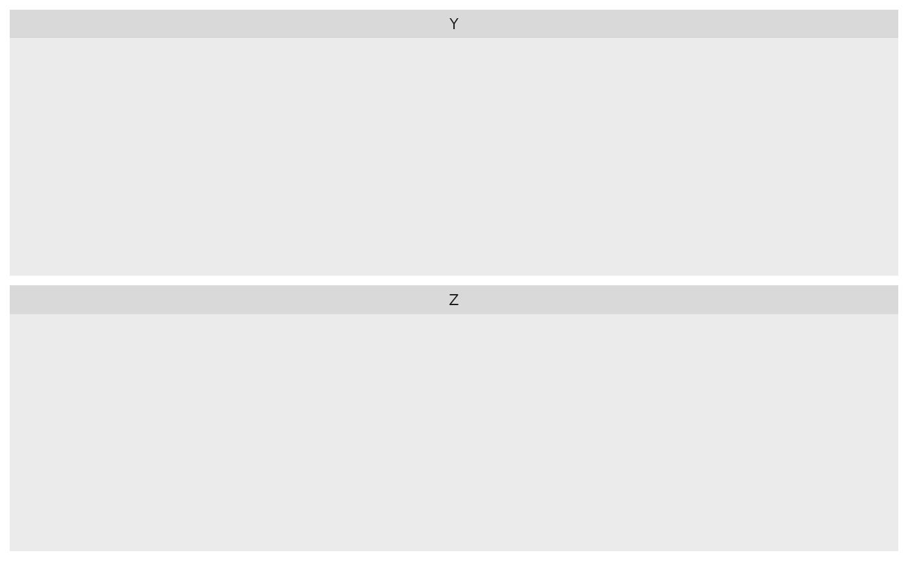
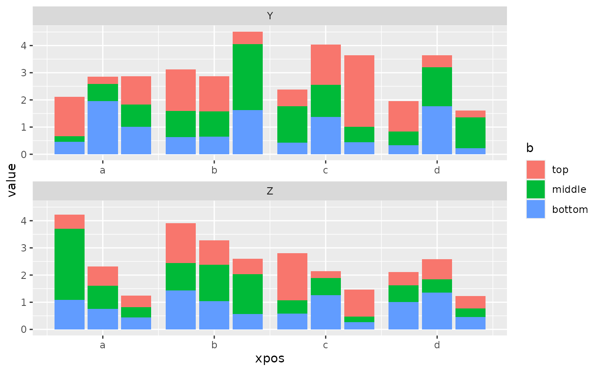

Utility functions for plotting stacked (on top of each other) and dodged (next to each other) bars in the same figure.
Usage
ggplot_bar_stacked_dodged(data, mapping, gap = 1)
add_stacked_dodged_xpos(data, ..., gap = 1)
calc_stacked_dodged_xlabels(data, ..., gap = 1)Arguments
- data
A data frame
- mapping
An aesthetic mapping generated by
aes(), containing the aestheticsx,y,fill, anddodge. The aestheticxwill form groups on the x-axis, whiledodgewill form individual bars within the groups.- gap
The width of the gap between bars, relative to the width of the bars themselves (default:
1).- ...
A selection of two columns. Both will be combined to form x-axis coordinates. The first will form the outer iteration (groups), the second the inner iteration (bars within a group). If unnamed, the column with calculated positions will be called
xpos.
Value
add_stacked_dodged_xpos() returns the input data frame with an
additional column. Row and column order are preserved.
calc_stacked_dodged_xlabels() returns a named character vector for use
with scale_x_continuous().
ggplot_bar_stacked_dodged() returns a ggplot object.
Details
add_stacked_dodged_xpos() adds x-axis positions to a data frame for
plotting two categorical variables within a bar plot.
calc_stacked_dodged_xlabels() calculates matching label positions on
the x-axis.
ggplot_bar_stacked_dodged() uses both functions to generate a plot.
Examples
require(tidyverse)
set.seed(0)
(data <- crossing(a = factorise(c('left', 'center', 'right')),
b = factorise(c('top', 'middle', 'bottom')),
c = letters[1:4],
d = LETTERS[25:26]) %>%
mutate(value = abs(rnorm(n())) + 0.2))
#> # A tibble: 72 × 5
#> a b c d value
#> <fct> <fct> <chr> <chr> <dbl>
#> 1 left top a Y 1.46
#> 2 left top a Z 0.526
#> 3 left top b Y 1.53
#> 4 left top b Z 1.47
#> 5 left top c Y 0.615
#> 6 left top c Z 1.74
#> 7 left top d Y 1.13
#> 8 left top d Z 0.495
#> 9 left middle a Y 0.206
#> 10 left middle a Z 2.60
#> # ℹ 62 more rows
(plot.data <- add_stacked_dodged_xpos(data, c('c', 'a')))
#> # A tibble: 72 × 6
#> a b c d value xpos
#> <fct> <fct> <chr> <chr> <dbl> <dbl>
#> 1 left top a Y 1.46 1
#> 2 left top a Z 0.526 1
#> 3 left top b Y 1.53 5
#> 4 left top b Z 1.47 5
#> 5 left top c Y 0.615 9
#> 6 left top c Z 1.74 9
#> 7 left top d Y 1.13 13
#> 8 left top d Z 0.495 13
#> 9 left middle a Y 0.206 1
#> 10 left middle a Z 2.60 1
#> # ℹ 62 more rows
(xlabels <- calc_stacked_dodged_xlabels(data, c('c', 'a')))
#> a b c d
#> 2 6 10 14
ggplot(data = plot.data) +
scale_x_continuous(breaks = xlabels) +
facet_wrap(~ d, ncol = 1, scales = 'free_x')

ggplot_bar_stacked_dodged(data, aes(x = a, y = value, fill = b, dodge = c),
gap = 1/3) +
facet_wrap(~ d, ncol = 1, scales = 'free_x')
